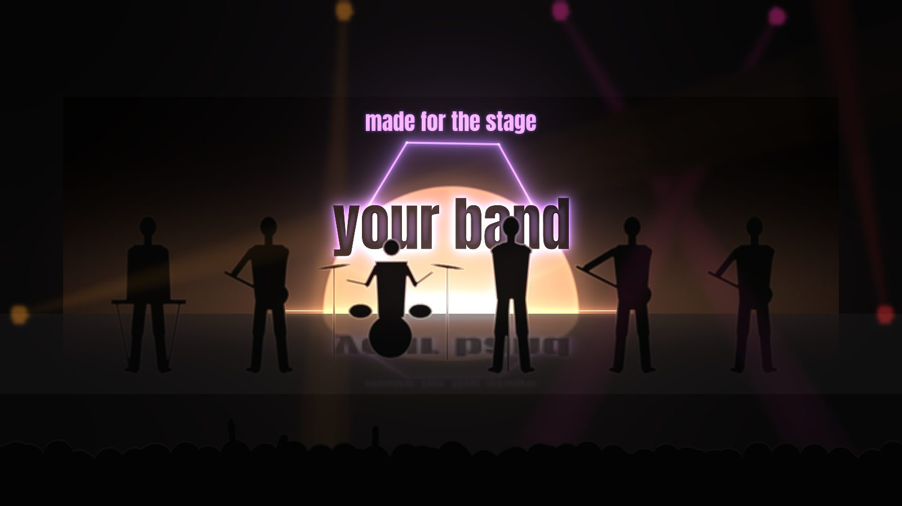

LED Wall Creator started as a tool for one band's live show. This is how it happened.

vespa maia is a band of six. When we started planning our live show, we knew we wanted an LED wall behind us. Not a stream of stock visuals, but light that breathes with our songs: bright when the chorus hits, almost nothing in the quiet parts, and each of us with our own piece of it.
The look we kept coming back to was simple. A warm half circle, like the sun setting behind the stage, with soft pastel pulses on the beat. Artists like MARO showed us how far one minimal idea can go, and how a glowing wall turns the band into silhouettes.
We didn't need more effects. We needed a way to write light the way we write music.
VJ software is made for improvising live. Video editors don't know what a beat is. Paying someone to animate every song wasn't an option for a band our size. And none of these tools thought the way we do, in bars, patterns and sections.
Henrique, from the band, started building a tool that works like a drum machine for light. Each shape on the wall is an instrument. Each of us gets a lane. You draw notes on a grid, put the patterns along the song, and the wall follows the track to the beat.
Then it grew: a sun, a beam and a hexagon, then custom shapes and haze. The band's name in lights, then lyrics. A preview of the whole stage, so we could see it before a single rehearsal. Fast 4K exports, so changing a song the night before a gig isn't a problem.
Every band that plays small and mid-sized stages has the same problem we had. If this helps you put on a better show, that's the point. Download it, make something beautiful, and send it our way. We'd love to see it.